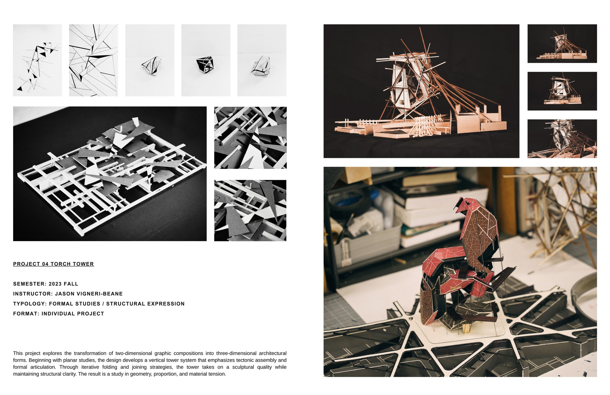
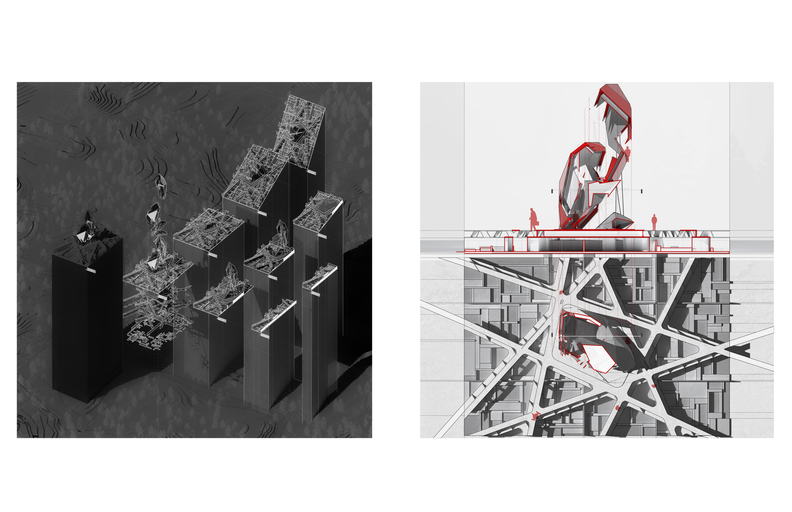
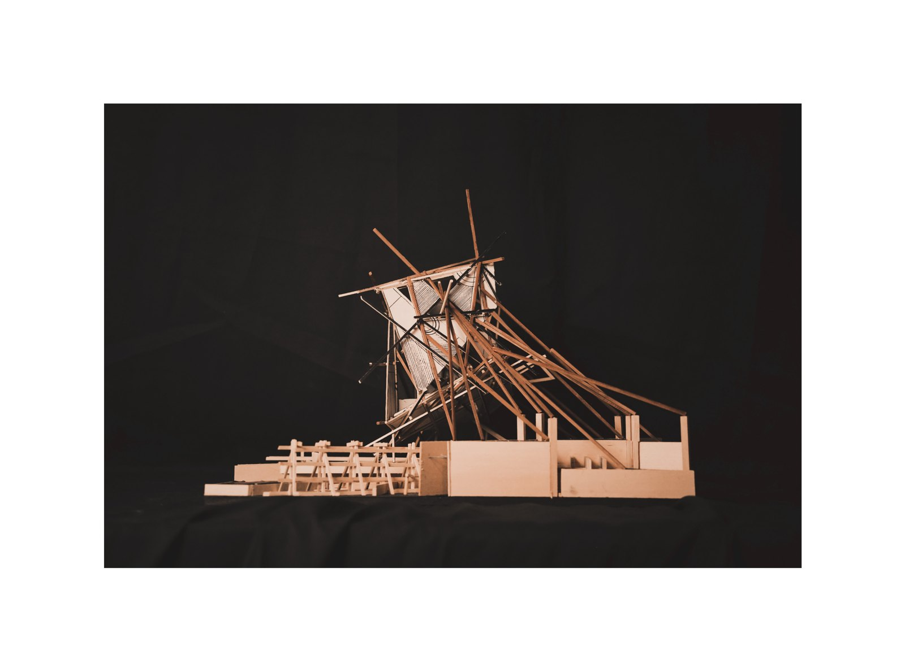
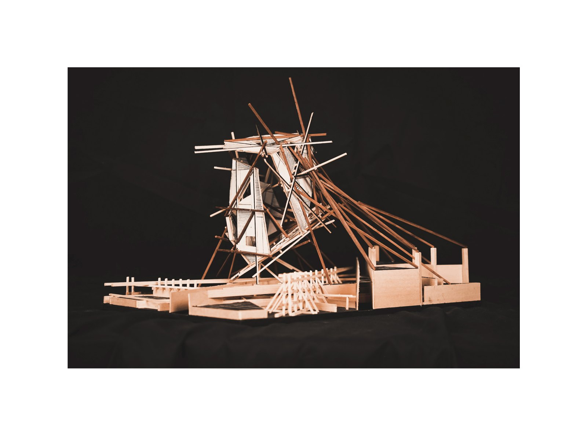
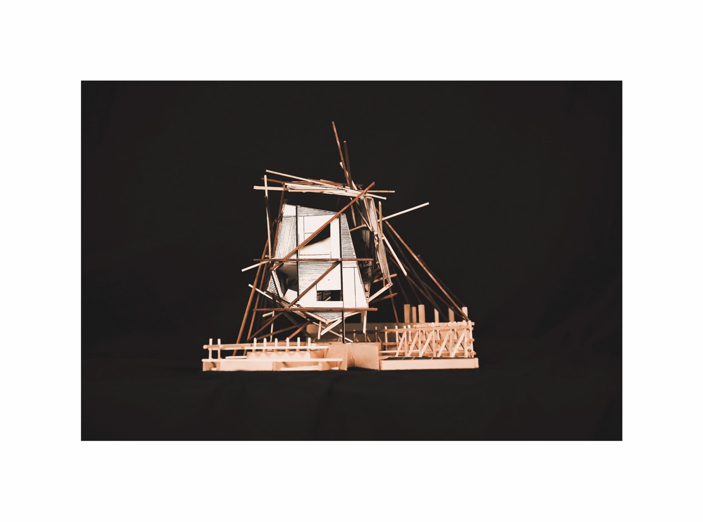

Torch Tower begins as a two-dimensional graphic composition and is translated into three-dimensional architectural form. Through folding and joining strategies, the tower takes on a vertical structural expression — a study in geometry, proportion, and material tension, resolved through a handmade model.
Torch Tower 以一个二维平面构成为起点，并被转译为三维建筑形式。通过折叠与接合策略，塔体呈现出竖向的结构表现——一项关于几何、比例与材料张力的研究，最终以手工模型完成。




